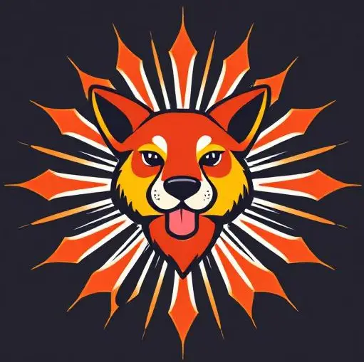

Våra Samarbetspartners
Vi samarbetar med lokala producenter och leverantörer för att säkerställa högsta kvalitet på våra råvaror.
- Antika Grönsaker AB - Levererar färska, ekologiska grönsaker från lokala gårdar. 
- Romerska Kryddor HB - Importerar autentiska romerska kryddor och örter.
- Vino di Roma - En lokal vingård som förser oss med utsökta romerska viner.
- Italienska Fiskexporten - Förser oss med färsk fisk och skaldjur av högsta kvalitet.
- Lammkött från Lazio - Levererar saftigt lammkött från regionen Lazio.